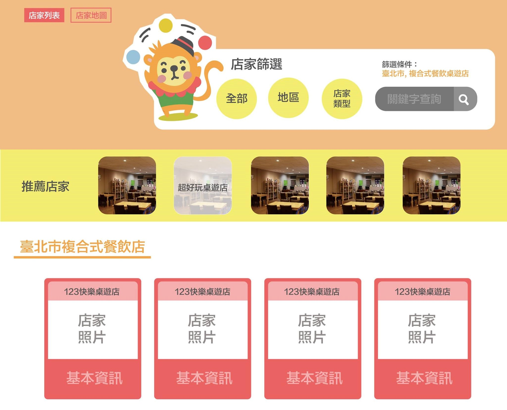
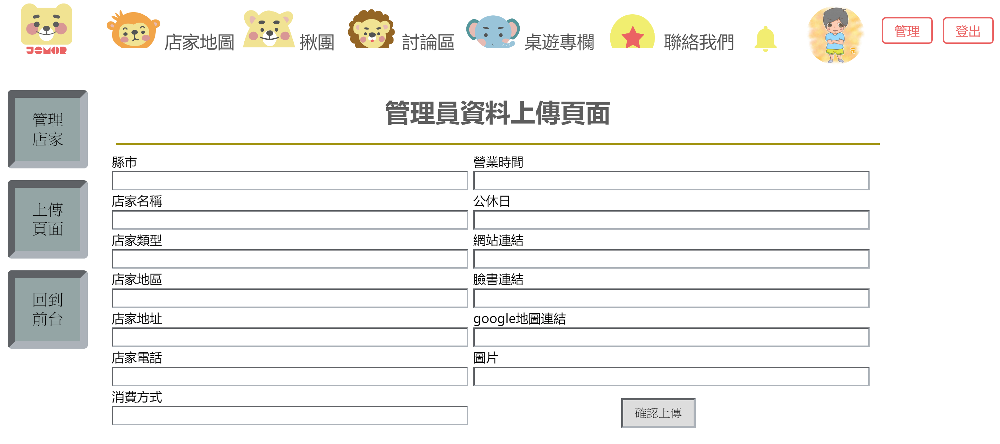
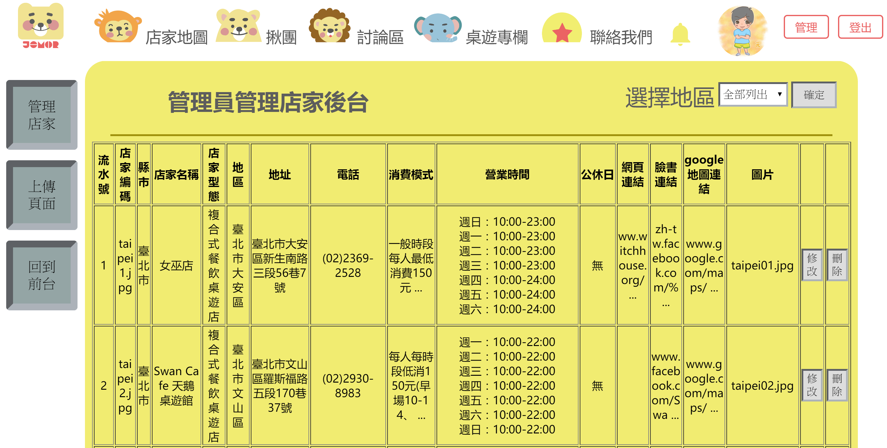
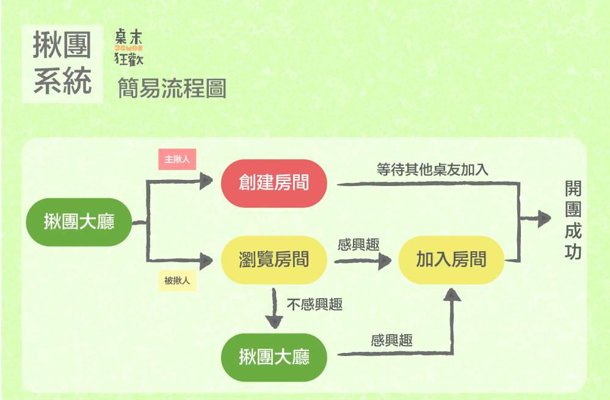

自傳
resume
我叫王柏元，我熱愛接觸新的事物，喜歡思考並且解決問題，個性嚴謹務實，待人溫和，特別注重團隊，處世原則是以和為貴。
除了資傳方面的專長，我也雙主修口傳系，訓練嚴謹的邏輯思辨與理性的思維模式，並且精進溝通能力，諸如團體溝通、組織傳播與協商等。
在學校中我特別喜歡余顯強教授，他教授我們Java、XML和資料庫，他不僅替我打下紮實的基礎，也從他身上學到務實勤勉的精神。
大學期間我加入羽球社，擔任社長，當時羽球社面臨倒社危機，無論內部財政問題抑或外部招生問題等，都是極大的挑戰，我決定正視問題並針對癥結點思考對策，過程中阻礙重重，仍努力克服解決難題，終於突破困境讓羽球社成為了穩定發展的大型社團，印證了我的責任感更強化了危機應變處理能力。
希望藉由實習經驗應用所學，自我提升同時更為公司帶來效益。
除了資傳方面的專長，我也雙主修口傳系，訓練嚴謹的邏輯思辨與理性的思維模式，並且精進溝通能力，諸如團體溝通、組織傳播與協商等。
在學校中我特別喜歡余顯強教授，他教授我們Java、XML和資料庫，他不僅替我打下紮實的基礎，也從他身上學到務實勤勉的精神。
大學期間我加入羽球社，擔任社長，當時羽球社面臨倒社危機，無論內部財政問題抑或外部招生問題等，都是極大的挑戰，我決定正視問題並針對癥結點思考對策，過程中阻礙重重，仍努力克服解決難題，終於突破困境讓羽球社成為了穩定發展的大型社團，印證了我的責任感更強化了危機應變處理能力。
希望藉由實習經驗應用所學，自我提升同時更為公司帶來效益。
高中：和平高中
大學：世新大學
曾任職：文華國家圖書館文獻建檔員工
居住地：新店區
興趣：看書/打羽球
專長：打羽球
大學：世新大學
曾任職：文華國家圖書館文獻建檔員工
居住地：新店區
興趣：看書/打羽球
專長：打羽球
作品
works
桌遊資訊整合平台
桌末狂歡
桌末狂歡

桌末狂歡整合全台桌遊店家，並搭配揪團系統讓玩家能夠揪團前往指定店家玩桌遊，同時也能在網站上討論與查看桌遊相關文章。
我在這個專案中擔任程式設計，
而我負責的部分有：
而我負責的部分有：
會員系統
會員系統的存在是為了搭配揪團系統，非會員則不能使用揪團功能，同時會員系統能紀錄、整理和統計網站的會員資料。流程上可以選擇直接用FB登入或註冊帳號，註冊後系統便會寄出一封認證信，認證後即完成註冊手續，而不管是何種會員皆有完整資料儲存在MySQL中。
店家地圖
收錄全台200多間桌遊店的詳細資訊於資料庫中，並以店家卡和google地圖的方式呈現，搭配篩選系統讓使用者能依照所需選取店家。在收錄店家資訊的過程中，我運用我在當文獻建檔員的經驗與知識建立了一個後台給組員(管理員)方便輸入與管理資料。



揪團系統
讓使用者可以開啟房間並揪團前往店家玩桌遊，每開一間房間或有人員加入，都會有完整資料紀錄於資料庫內，成功揪團後系統會寄出通知信告知玩家，最後系統會跳互評視窗，達到會員彼此約束的效果。簡易流程圖如下。
